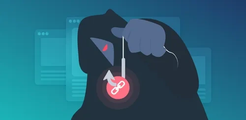
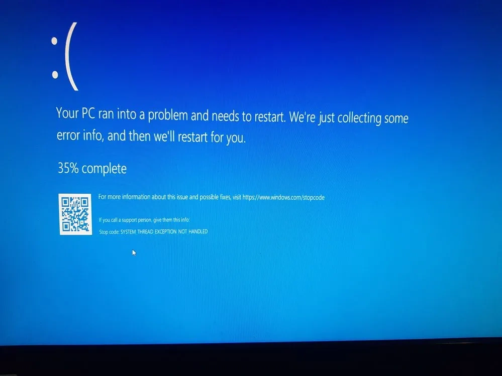
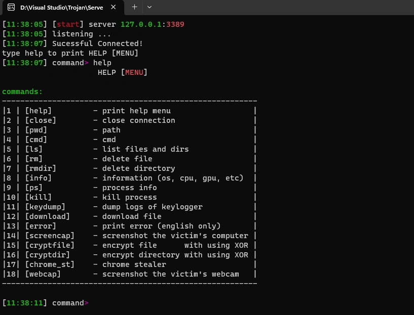

Cybersecurity Research Projects
Antivirus
A Windows-based antivirus application developed in C++ that scans files and directories for known malware. It uses SHA256 hashing to detect threats and provides real-time updates and detailed scan results.
Ransomware
A C++ program designed to encrypt files on a Windows system, making them inaccessible until a decryption key is provided. The program uses a custom encryption algorithm and appends a `.tu` extension to encrypted files. It demonstrates ransomware functionality for educational purposes only.
Phishing Website
This project involves a simulated phishing website designed to capture login credentials by mimicking legitimate sites. It demonstrates how phishing attacks work by tricking users into entering their usernames and passwords, which are then sent to a remote server.
Blue Screen of Death (BSoD)
A C++ application that triggers a Blue Screen of Death (BSoD) on Windows by simulating a critical system error using NT API functions. This educational project illustrates the impact of such errors on the operating system.
Master Boot Record (MBR) Virus
This C++ program is a malicious tool designed to overwrite the Master Boot Record (MBR) of a system, potentially rendering the computer unbootable. In addition to the MBR overwrite, it creates various graphical and auditory disturbances on the desktop to disrupt the user experience.
Trojan Horse
Developed a sophisticated Trojan horse capable of executing a range of malicious activities on a Windows system. This Trojan includes features such as remote command execution, file management, system information retrieval, and data extraction.
Rubber Ducky USB
Developed a Rubber Ducky USB device capable of executing automated keystroke injections. This project demonstrates how the device can be used to deliver commands quickly and covertly for educational security research purposes.